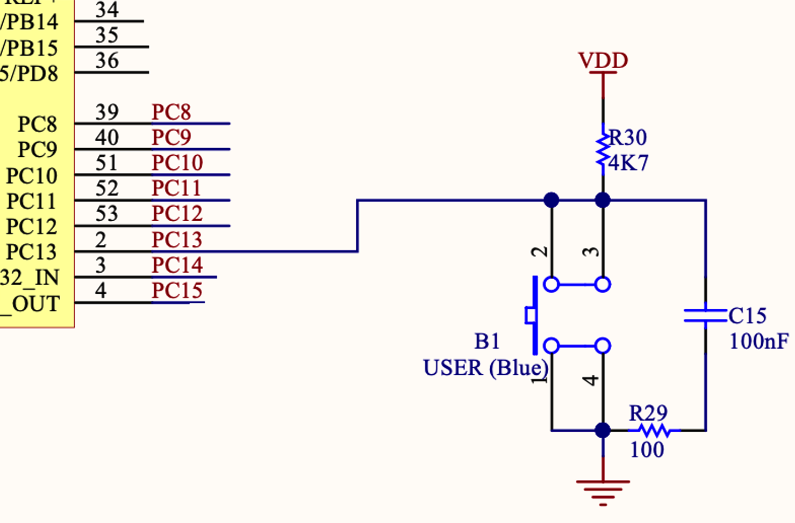

L05 - GPIO and Hardware Abstraction
Both statements turn PA5 on. The hardware result is the same; the interface is different.
Today we will connect every HAL name to the register behavior learned in L04.
01 L04: calculate masks and write CMSIS registers directly.
02 TODAY: describe the same configuration with a HAL structure and functions.
03 EVIDENCE: inspect the registers after HAL runs and confirm the physical result.
HAL does not replace the hardware model. It gives the program another way to express it.
CMSIS = Common Microcontroller Software Interface Standard (Arm): standard C names for registers, such as GPIOA->MODER. HAL = Hardware Abstraction Layer (ST): functions such as HAL_GPIO_WritePin.
01 Read a GPIO_InitTypeDef configuration structure.
02 Connect HAL mode, pull, and speed names to GPIO register fields.
03 Use HAL functions to write, toggle, and read GPIO pins.
04 Explain floating inputs, pull-up, pull-down, and button logic.
05 Compare direct CMSIS access with HAL using debugger evidence.
01 POINTER MEMBER — the MODER member of the register structure that the CMSIS pointer GPIOA points to.
02 MASK — 3U << 10 selects bits 11 and 10, PA5’s mode field.
03 RESULT — clear then set leaves 01: general-purpose output.
04 HARDWARE — read GPIOA->MODER in the SFR view (bits 11:10 = 01); ODR/LD2 confirm the output path.
Today: the exact same bits — written by a function with names instead of masks.
| Direct CMSIS access | STM32 HAL | |
|---|---|---|
| Strength | precise control; every register write is visible | readable names; faster to write |
| Cost | you calculate masks and know register details | an extra layer hides the register writes |
GPIO_InitTypeDef holds the pin settingsGPIO_InitTypeDef output = {0};
output.Pin = GPIO_PIN_5;
output.Mode = GPIO_MODE_OUTPUT_PP;
output.Pull = GPIO_NOPULL;
output.Speed = GPIO_SPEED_FREQ_LOW;GPIO_InitTypeDef is a structure type supplied by the STM32 HAL headers. output is our variable name, and the dot selects one setting inside it.
The {0} initializes every member to zero before individual settings are assigned.
Type definition: stm32f4xx_hal_gpio.h, lines 46–62 (in VS Code: Ctrl/Cmd + click GPIO_InitTypeDef) · Deep dive: UM1725 Rev 8, GPIO functions — p. 447.
GPIO_InitTypeDef01 Pin selects PA5 using the mask GPIO_PIN_5.
02 Mode requests push-pull output: the pin can actively drive both high and low.
03 Pull requests no internal pull resistor.
04 Speed requests the low output transition-speed setting.
&output passes the structure’s address so the function can read its members.
| HAL configuration | Register effect for PA5 |
|---|---|
GPIO_PIN_5 |
select pin 5 |
GPIO_MODE_OUTPUT_PP |
MODER[11:10] = 01, OTYPER[5] = 0 |
GPIO_NOPULL |
PUPDR[11:10] = 00 |
GPIO_SPEED_FREQ_LOW |
OSPEEDR[11:10] = 00 |
The HAL function converts the named settings into register operations.
Deep dive: RM0368 Rev 6, §8 GPIO — p. 146.
MX_GPIO_Init() sets up the pins you chose in CubeMX. Here it makes PA5 (LD2) an output that starts low. main() calls it once, before the while (1) loop.
static void MX_GPIO_Init(void)
{
GPIO_InitTypeDef config = {0};
__HAL_RCC_GPIOA_CLK_ENABLE();
HAL_GPIO_WritePin(GPIOA, GPIO_PIN_5, GPIO_PIN_RESET);
config.Pin = GPIO_PIN_5;
config.Mode = GPIO_MODE_OUTPUT_PP;
config.Pull = GPIO_NOPULL;
config.Speed = GPIO_SPEED_FREQ_LOW;
HAL_GPIO_Init(GPIOA, &config);
}Read top to bottom: clock → safe starting level → settings → initialization. Here, generated static means this helper is used only inside this source file.
HAL_GPIO_WritePin| Function | Job | Result |
|---|---|---|
HAL_GPIO_WritePin(port, pin, state) |
force high or low | no return value |
HAL_GPIO_TogglePin(port, pin) |
reverse the output | no return value |
HAL_GPIO_ReadPin(port, pin) |
sample an input | GPIO_PIN_SET or GPIO_PIN_RESET |
Configuration happens once. These functions are used while the program is running.
Each function is a few lines of C: stm32f4xx_hal_gpio.c — read HAL_GPIO_WritePin and find the BSRR write.
ODR and IDR: the GPIO data registers| Register | What it holds | HAL function |
|---|---|---|
ODR (output data) |
the value an output pin drives | WritePin sets or clears it through BSRR. TogglePin reads it, then writes BSRR. |
IDR (input data) |
the level on the pin now; read-only | ReadPin reads it. |
In the register view, ODR5 = 1 means LD2 is driven high, and IDR13 = 0 means B1 is pressed.
In stm32f4xx_hal_gpio.c, HAL_GPIO_ReadPin reads IDR and HAL_GPIO_TogglePin reads ODR.
1 CONFIGURE .ioc
PA5 → GPIO output
→
2 GENERATE CODE
CubeMX writes C
→
3 CALL ONCE
MX_GPIO_Init()
→
4 USE IN LOOP
WritePin / TogglePin
Watch for: LD2 blinks · MODER5 = 01 in the register view · ODR5 follows each WritePin.
So far PA5 was an output: the program sets the pin voltage. On an input, a circuit outside the chip sets the voltage, and the program reads it.
An input reads a clear value only if a circuit holds the pin high or low. With B1 open and no pull resistor, nothing drives PC13: noise moves its voltage, and each read can give a different value.
While B1 is open, only the resistor sets the level of PC13.
PUPDR selects the internal pull resistor| Two-bit field | Internal connection |
|---|---|
00 |
no internal pull |
01 |
internal pull-up |
10 |
internal pull-down |
11 |
reserved |
PC13 starts at bit 13 × 2 = 26, so its two-bit field is bits 27:26.
Deep dive: RM0368 Rev 6, GPIOx_PUPDR — p. 159.
| What the pin reads when nothing drives it | Pull setting | PUPDR |
HAL setting |
|---|---|---|---|
set by the board (B1: R30 pulls it to 1) |
no internal pull | 00 |
GPIO_NOPULL |
1 |
pull-up | 01 |
GPIO_PULLUP |
0 |
pull-down | 10 |
GPIO_PULLDOWN |
The Nucleo button already has an external pull-up, so it does not need an internal one.
Source: STM32F401xD/xE datasheet, DS10086 Rev 5, Table 54 — p. 92: internal pull-up and pull-down are 30–50 kΩ (typical 40 kΩ); each is a resistor in series with a switchable transistor.

B1 USER ON PC13
GPIO_PIN_SETGPIO_PIN_RESETThe button is active-low: pressed means logic 0.
GPIO_InitTypeDef config = {0};
__HAL_RCC_GPIOC_CLK_ENABLE();
config.Pin = GPIO_PIN_13;
config.Mode = GPIO_MODE_INPUT;
config.Pull = GPIO_NOPULL;
HAL_GPIO_Init(GPIOC, &config);No output speed is required for a plain input.
HAL_GPIO_ReadPinB1 is active-low: pressed reads GPIO_PIN_RESET (0).
| B1 condition | HAL_GPIO_ReadPin |
if condition |
LD2 command |
|---|---|---|---|
| released | ? | ? | ? |
| pressed | ? | ? | ? |
1 Fill the four missing values in each row.
2 What single comparison would reverse the behavior?
3 Which debugger observation would prove the input changed?
01 CUBEMX: set PC13 to GPIO_Input, generate code.
02 CODE: paste the polling loop into USER CODE 3, build, run.
03 CHECK: press and release B1; compare LD2 with your prediction.
04 REGISTERS: MODER13 = 00, PUPDR13 = 00, IDR13 1 → 0 when pressed.
05 CHANGE: == becomes !=. Predict LD2, then run.
A successful build proves valid translation and linking—not correct pin behavior.
Rebuild the L04 LED behavior with HAL, then use B1 to control LD2 and prove the HAL configuration in the register view.
You will demonstrate:
✓ Read the members of GPIO_InitTypeDef.
✓ Connect HAL mode, pull, and speed names to register fields.
✓ Explain floating, pulled-up, and pulled-down inputs.
✓ Write and read pins through HAL functions.
✓ Use the register view to verify HAL configuration.
Trace the complete chain: circuit connection → PUPDR bits → HAL setting → value read by the program.
Next: replace continuous button polling with an interrupt-driven event.
01 REGISTER: PC13’s MODER and PUPDR fields — what values?
02 POINTER: Why does HAL_GPIO_Init receive &config?
03 LOGIC: Which read value means B1 is pressed?
04 EVIDENCE: What would you inspect after the HAL call?
Scan before you leave — ungraded; your answers open the next lecture.
Every concept in this lecture, with page-linked sources: academic references.
EE5203 - L05